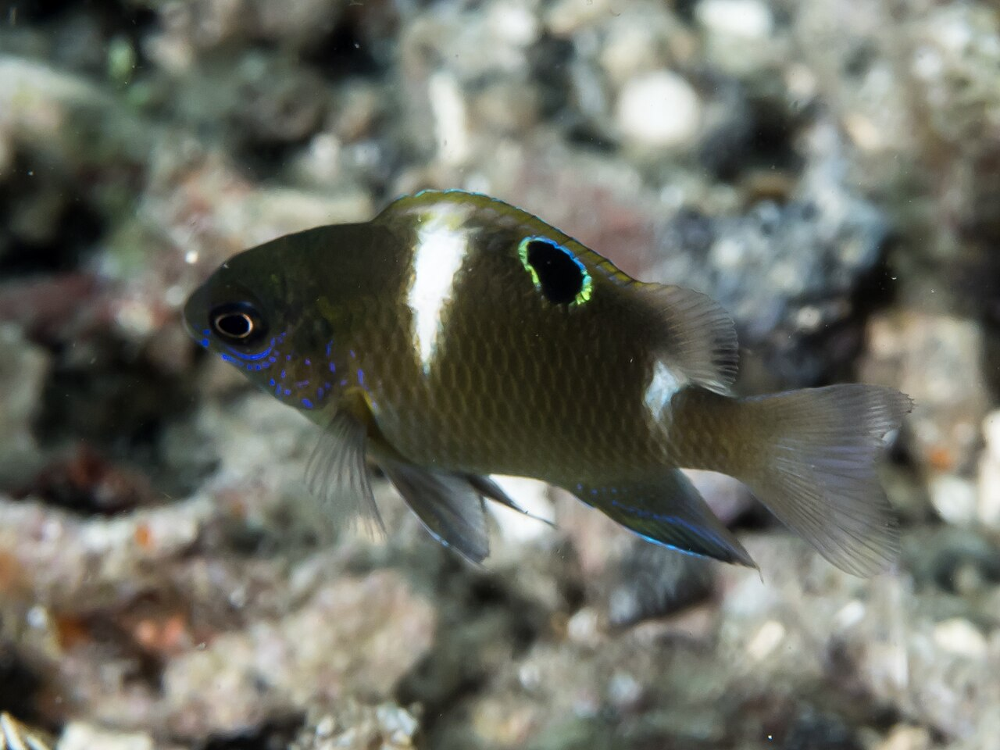
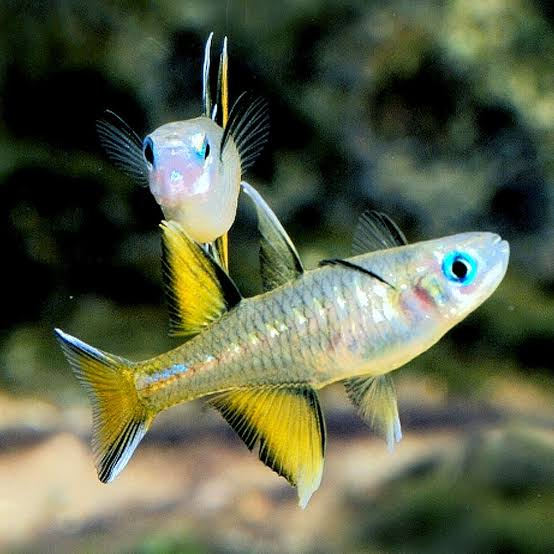
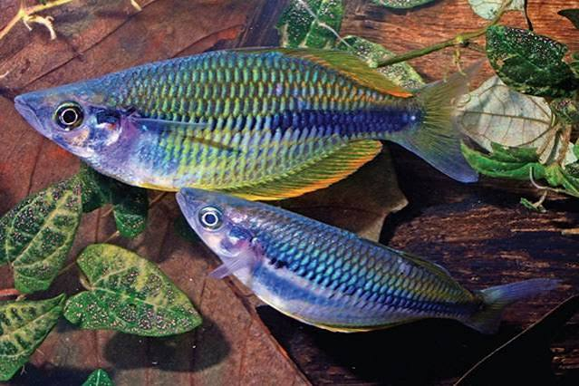

The beautiful fish of Papua New Guinea
-
The Whitespot damsel

- Adults inhabit inshore areas, among rocky outcrops and debris on sand (Ref. 9710). They occur singly or in small groups. Feed primarily on algae. Oviparous, distinct pairing during breeding (Ref. 205).
Eggs are demersal and adhere to the substrate (Ref. 205). Males guard and aerate the eggs (Ref. 205).
Cape blue-eye

- The Cape blue-eye (Pseudomugil signifer) is a small freshwater fish found in the rivers and streams of Papua New Guinea.
It is known for its distinctive blue coloration and is often kept in aquariums.
New Guinea rainbowfish

- The New Guinea rainbowfish (Melanotaenia affinis) is a species of rainbowfish native to the freshwater habitats of Papua New Guinea.
It is characterized by its vibrant colors and is popular among aquarium enthusiasts.